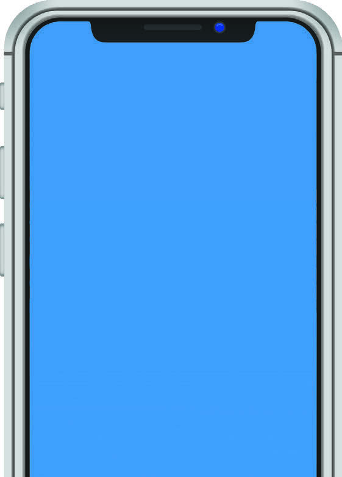

2)
AGORA, APRESENTE AOS COLEGAS E COMENTE COM ELES AS INFORMAÇÕES QUE VOCÊ ESCREVEU NO QUADRO.
NÚMEROS EM NOSSA VIDA
OBJETO EDUCACIONAL DIGITAL
VOCÊ JÁ REPAROU O QUANTO OS NÚMEROS FAZEM PARTE DA NOSSA VIDA?
ELES INDICAM DATAS IMPORTANTES, REPRESENTAM QUANTIDADES DE PESSOAS OU DE BOAS LEMBRANÇAS, IDENTIFICAM CÓDIGOS COMO O QUE USAMOS NO TELEFONE.
DEPENDENDO DO CONTEXTO, OS NÚMEROS TÊM SIGNIFICADOS DIFERENTES.
OBSERVE OS NÚMEROS DA IMAGEM AO LADO.
NA TELA DO CELULAR, O NÚMERO 8 APARECE COM FUNÇÕES DIFERENTES.

08:10
Sábado, 8 de abril
27 °C
ALGUMAS INFORMAÇÕES APARECEM NA TELA DE DESBLOQUEIO DO CELULAR EM TEMPO REAL.
freepik
freepik
08:10
INDICA A HORA
SÁBADO, 8 DE ABRIL
INDICA O DIA DO MÊS
NESSE EXEMPLO, QUAL OUTRO NÚMERO APARECE NA TELA DO CELULAR?
O QUE ELE SIGNIFICA?
27, e indica a temperatura do dia.
Durante as apresentações da atividade 2, promova um ambiente de respeito e incentivo.
É um bom momento para estimular a reflexão e o diálogo entre os estudantes.
Após cada apresentação, incentive os estudantes a fazer perguntas e comentários, promovendo um ambiente participativo e colaborativo.
Isso fortalece os laços entre eles.
Para iniciar o tópico “Números em nossa vida”, faça uma breve introdução sobre a importância dos números no dia a dia citando exemplos e destacando como os números estão presentes em diferentes aspectos da vida.
Leia o texto em voz alta, incentivando os estudantes a acompanhar a leitura.
Após a leitura, solicite que grifem as partes do texto que destacam a presença dos números.
Encoraje os estudantes a compartilhar suas experiências e observações sobre o tema
OBJETO EDUCACIONAL DIGITAL
Vídeo - Os números e seus diferentes significados no cotidiano
Objeto Educacional Digital em formato de vídeo, no qual são exploradas situações do dia a dia, com enfoque nos números que aparecem no cotidiano e seus diferentes significados.
É um objeto digital que destaca informações de tempo em relógios digital e analógico, velocidade, distância, preço, peso de uma refeição, números em um endereço e telefone.
O objeto digital objetiva uma aprendizagem que evidencia a utilização da matemática e os significados dos números no dia a dia de uma pessoa comum.